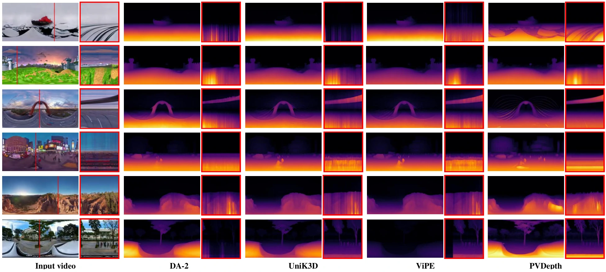

ICML 2026
PVDepth
Panoramic Video Depth Estimation
via Geometry-Aware Spatiotemporal Adaptation
1 Peking University2 Pengcheng Laboratory
01 Input panoramic video RGB
02 PVDepth prediction DEPTH
0:000:00 Synchronized
Panoramic input → temporally consistent relative depth.Far Near
REAL-WORLD EXAMPLES
City street
Street-level motion past parked vehicles, trees, and buildings.
Trained on outdoor PanoCARLA. The indoor clip tests generalization beyond the training domain. All clips show five seconds at original speed, with a fixed color scale for relative inverse depth.
01 / DATASET
PanoCARLA
A synthetic panoramic RGB-D video dataset with natural motion trajectories and drone-like roaming viewpoints.
Panoramic RGB-D videos
Eight selected recordings, viewed together.
12-second excerpts · original speed
Selected examples from Town01–07 and Town10. Each tile shows RGB above depth, played at the original speed.
Camera trajectories
Enlarge a town map, or play a panoramic recording.
Town 03
Town 04
Town 07
Four example towns, with original recording paths overlaid on bird’s-eye maps.
PanoCARLA · published dataset statistics
126.7KRGB-D frames
117Video clips
50.61 kmRoaming distance
6-DoFCamera trajectories
Two-stage data acquisition
Captured in CARLA with a two-stage pipeline that separates trajectory recording from panoramic rendering. Each frame includes panoramic RGB, depth, and camera extrinsics.
PanoCARLA construction pipeline
Trajectory acquisition is decoupled from scene rendering to obtain unobstructed panoramic RGB-D videos.
Also available: PanoCARLA-Static ↗, a version without dynamic vehicles or pedestrians, with camera motion retained.
02 / SPATIOTEMPORAL CHALLENGES
Spatiotemporal challenges in ERP
Equirectangular projection (ERP) introduces spatial distortion and non-linear temporal dynamics.
Non-uniform information density
ERP stretches the polar regions, allocating excessive pixels to limited effective information.
Non-linear temporal dynamics
ERP distortion turns smooth object motion into discontinuous, non-linear pixel trajectories near the poles.
Panoramic video
The streetlamp moves through the polar region as the camera passes beneath it.
Sampled frames
t = 2.00 sFrame 40
t = 2.10 sFrame 42
t = 2.20 sFrame 44
Panoramic video and sampled frames from the same PanoCARLA recording. Up and down cubemap views are reprojected from each corresponding frame. The example illustrates the ERP challenges described in Figure 1 of the paper.
03 / METHOD
Geometry-aware
spatiotemporal adaptation
Adapting a pretrained video diffusion model to the spatial and temporal characteristics of panoramic videos.
Progressive sphere-aware
noise initialization
Gradually transitions from planar to sphere-aware noise, helping the model adapt to the non-uniform information density of an equirectangular image.
PSNICube-rectified
temporal modeling
An auxiliary cubemap branch models temporal information in less distorted views, then maps its features back to guide the panoramic branch.
CRTMCONTROLLED ABLATION
Ablation study
Component ablations on PanoCARLA, averaged over three evaluation settings. Baseline and individual components use the paper’s matched 40K-step results.
Evaluation protocol update ↗| Method | Abs Rel ↓ | δ₁ ↑ |
|---|---|---|
| DepthCrafter (fine-tuned) | 0.232 | 0.754 |
| + PSNI | 0.215 | 0.784 |
| + CRTM | 0.213 | 0.777 |
| PVDepth FULL | 0.199 | 0.798 |
These are the published paper results. The repository also provides an updated bounded evaluation protocol; results from different protocols should not be mixed.
04 / RESULTS
Qualitative comparisons
Depth estimation and temporal consistency on real-world panoramic videos.
One input, four depth predictions. PVDepth (top left), ViPE (top right), DA-2 (bottom left), and UniK3D (bottom right). The input appears in the center.
Original comparison ↗Look closer at temporal consistencySee the paper’s depth-over-time comparisons

Each red box stacks the depth values along a fixed image column over time. Temporal slices help reveal frame-to-frame flicker that a single depth image cannot show. See Figure 4 in the paper for the full analysis.
05 / RESOURCES
Resources
Paper, source code, and datasets.
01↗02↗03↗04↗
Paper
Method, experiments, and supplementary analysis
Code
Inference, training, and evaluation code
PanoCARLA
Panoramic RGB-D videos and camera trajectories
PanoCARLA-Static
Panoramic RGB-D dataset with static scenes
Scope & limitations
PVDepth predicts relative depth. PanoCARLA contains outdoor scenes; indoor examples are qualitative and are not accompanied by quantitative indoor evaluation. Strong specular reflections remain challenging. Diffusion-based inference also carries a higher cost than single-pass methods.
Citation
@inproceedings{song2026pvdepth,
title = {PVDepth: Panoramic Video Depth Estimation via
Geometry-Aware Spatiotemporal Adaptation},
author = {Song, Chuanxin and Peng, Peixi},
booktitle = {International Conference on Machine Learning},
year = {2026}
}